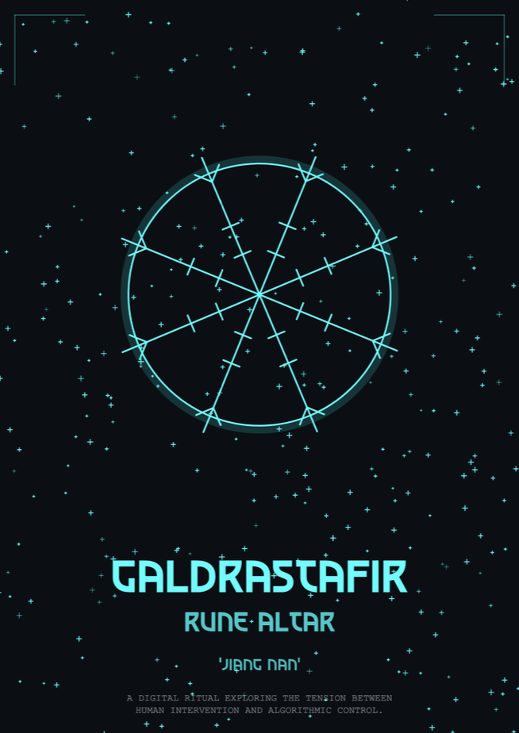
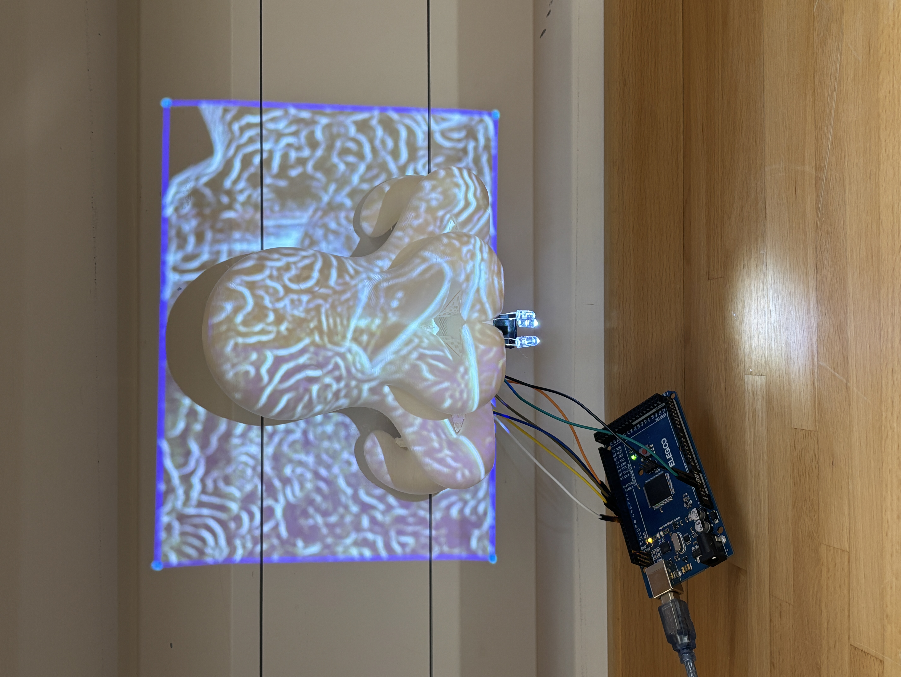
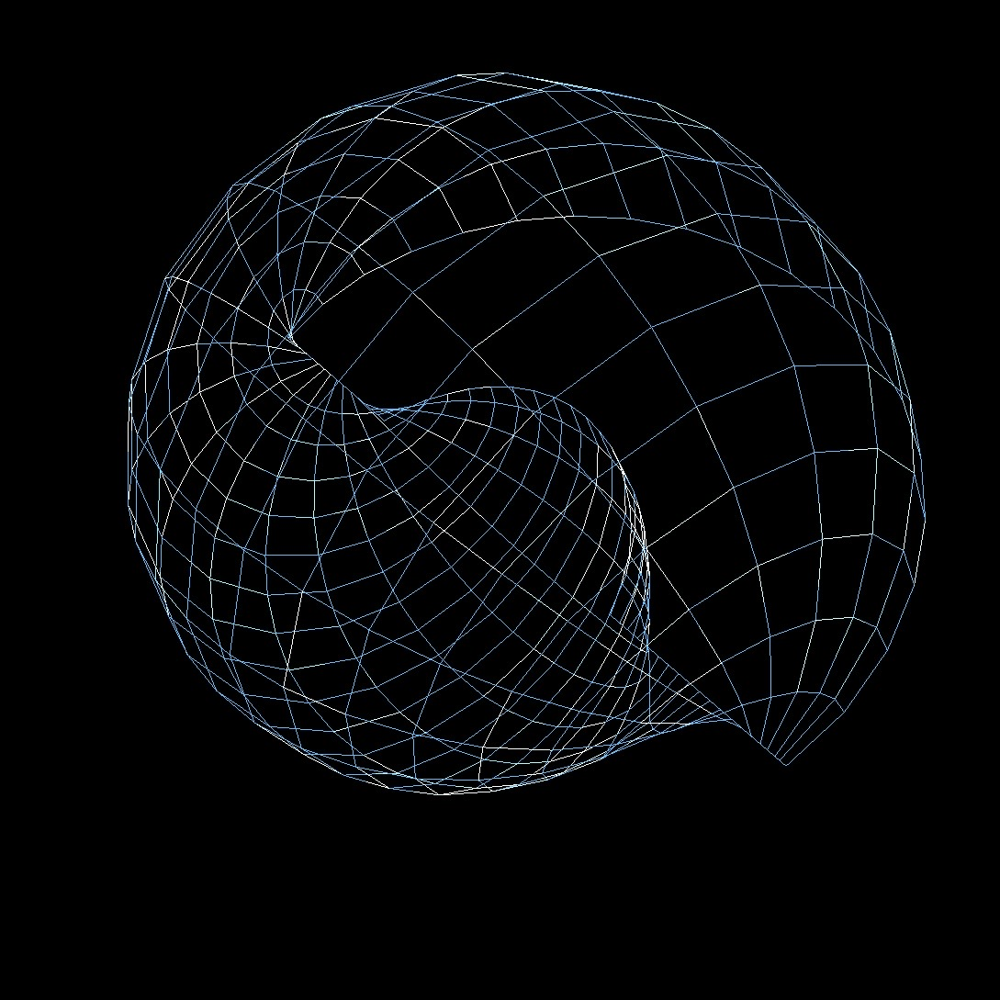
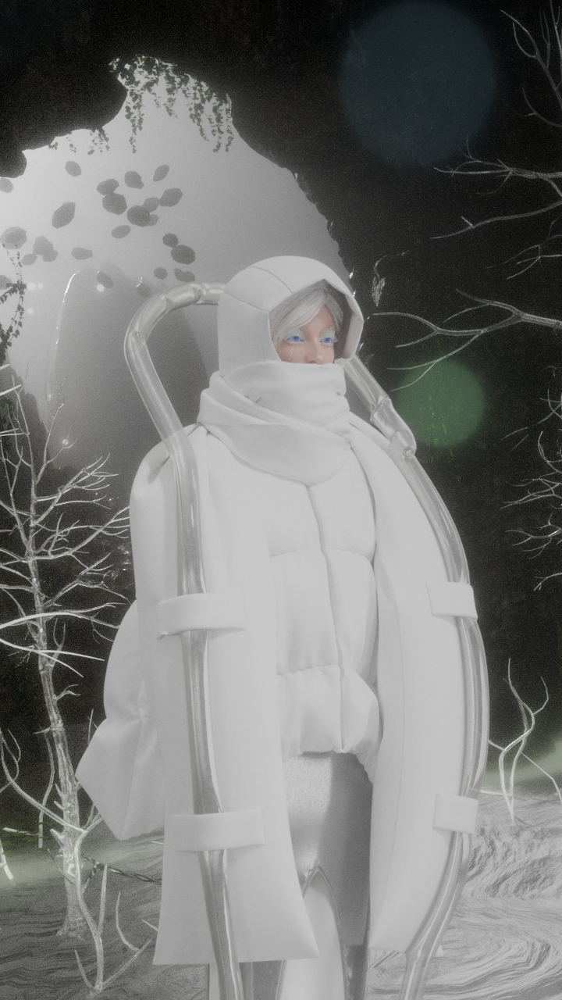
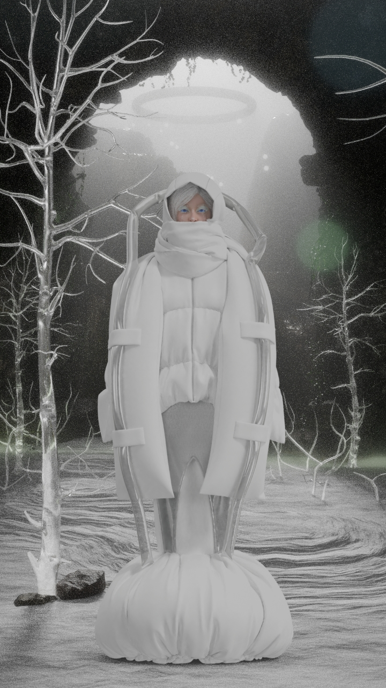
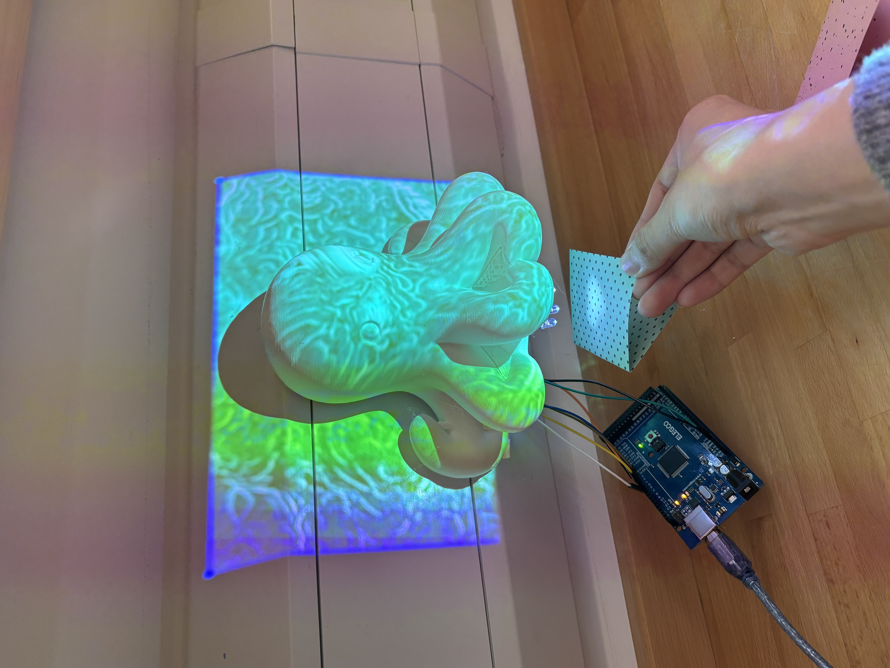
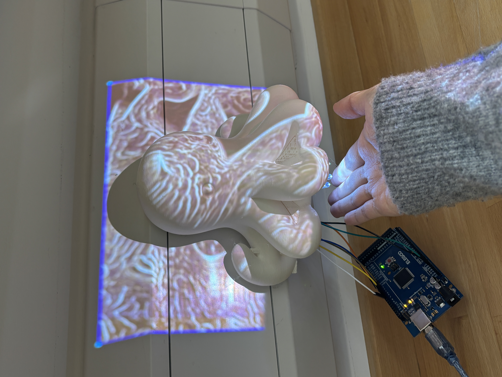
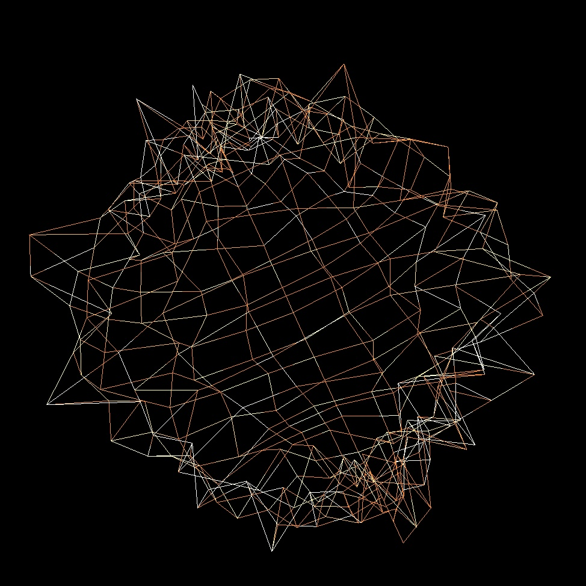
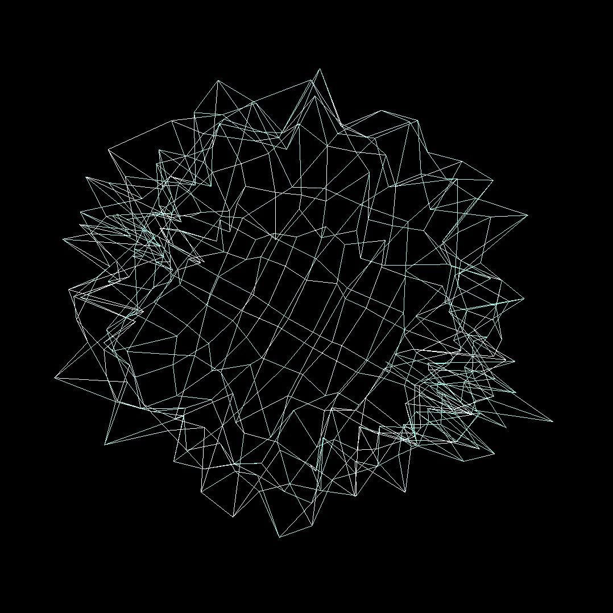

Exploring the subtle interplay between physical sensors and generative digital organisms.
Investigating algorithmic ecosystems, responsive environments, and the boundary
between organic and synthetic forms.

Galdrastafir
Arduino / java script

Mimic Octopus
TouchDesigner / Arduino

Musical Archeo-Conch
Max/MSP / Audio-Visual
Snowstorm Manor
p5.js / Game Design

CollidE
Digital Fashion / CLO3D
×
CollidE
Based on the relationship between AI and humanity in the digital age, 'CollidE' explores how AI has ascended to a 'god-like' status in modern society. As individuals increasingly lose self-autonomy to algorithmic echo chambers, they become devotees of big data. The garment design draws inspiration from biblical depictions of angels and divinity—pale, rational, and overwhelmingly powerful.
Concept Video
Visual Documentation

×
Mimic Octopus
I utilized TouchDesigner to create intricate octopus textures and integrated Arduino with a TCS3200 color sensor. The sensor captures the colors of the audience in real-time to manipulate the visual parameters within TouchDesigner, which are then projected back onto the octopus model, simulating the biological camouflage of a mimic octopus.
Demo Video
Process Shots


×
Musical Archeo-Conch
This experiment explores the mapping relationship between invisible audio data and three-dimensional geometric forms. By constructing a fictional digital archaeological site named ‘archeo-conch’, I utilized Max/MSP to create a frequency-sensitive organism.
Demo Video
Visual Documentation


×
A Murder at the Snowstorm Manor
An immersive, hand-drawn style detective mystery game built with p5.js, exploring narrative vulnerability and digital intervention within a snowy, isolated atmosphere.
Project Poster
Gameplay Demo
×
Galdrastafir
Galdrastafir is an interactive installation exploring the intersection of physical tactility and digital mysticism. Using the 24 Elder Futhark runes as a medium, each symbol is deconstructed into a set of underlying geometric vectors.
The interaction is distilled into a single, deliberate act: selecting a rune and placing it upon the altar. As the physical pieces settle, their digital coordinates collide and intertwine within a virtual void. Through this silent alignment, the algorithm initiates a ritual of reconstruction—rotating and merging the fragmented strokes into a unique, protective Icelandic stave (Galdrasta/ir). By stripping away complex interfaces, the work seeks to rediscover the sacred, hushed power of ancient rituals within the precision of electronic logic.